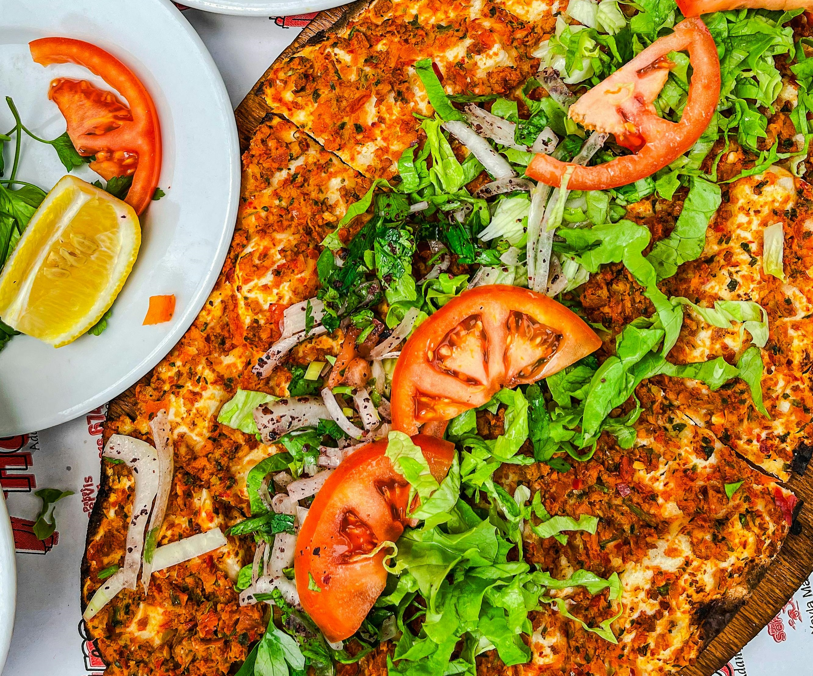

Lahmacun is healthy food from Turkey. It is known in Turkey but you need to go certain cities to eat amazing Lahmacun
Lahmacun, often called "Turkish Pizza," is a delicious and traditional Turkish dish made of thin, crispy flatbread topped with a savory mixture of minced meat, fresh vegetables, and aromatic spices. The dough is carefully rolled out, then generously spread with a flavorful blend of ground beef or lamb, tomatoes, onions, parsley, and a hint of red pepper flakes. Baked to perfection, it emerges from the oven with a crispy crust and a beautifully seasoned topping. Served with a squeeze of lemon and fresh parsley, Lahmacun is perfect for rolling up and enjoying as a quick snack or a satisfying meal.